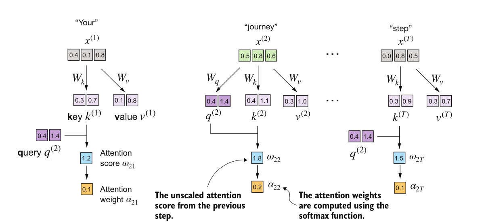

Slides 2
Scaled Dot-Product Attention
- Assume attention weights as random matrix
- We need to learn these weights during training
What to attend to : Identify relevant tokens in the sequence.
How strongly to attend: Compute attention weights over those tokens.
Contextualize/Output: Weighted sum of token representations.
Introducing Q, K, V vectors
- Query weight matrix ($W_q$) (for queries/input tokens)
- Key weight matrix ($W_k$) (for keys/other tokens)
- Value weight matrix ($W_v$) (for values/tokens to copy from)

Why three vectors (Q, K, V)?
- Query (Q): Represents the current token we are focusing on. Q gets specialized to ask questions about relevance.
- Key (K): Represents all tokens we are comparing against. K gets specialized to help determine relevance to Q.
-
Value (V): Represents the actual information we want to copy from the input. V gets specialized to carry useful content.
-
Q and K exist to define a similarity space, while V exists to define an information space.
- Queries are optimized to ask questions
- Values are optimized to carry information
--
Example Library System:
Think of each token as a book in a library. Every book has three different representations, depending on what you’re doing with it.
Query (Q): the question you’re asking right now
"I'm looking for material about animal fatigue"
"I need something that explains causal negation"
Important: The query is shaped by your current goal, not by what the books contain.
That’s exactly what Q does:
It encodes what this token needs from context.
--
Key (K): the book’s index card
Each book has an index card (or metadata record).
Topics, Keywords, Cross-references, Classification codes
Important: The system never reads the whole book to decide relevance. It compares your query against the keys.
That’s K: A compact representation optimized for matching, not for content.
--
Value (V): the actual book content
Once relevant books are identified, you don’t copy the index cards.
You copy: Paragraphs, Explanations, Facts,
That’s the Value: The information you actually want to transfer into your answer. | Component | Description | Example | |-----------|-------------|---------| | Query (Q) | The question you're asking | "I need info about animal fatigue" | | Key (K) | Index cards with topics/keywords | Book metadata, classification codes | | Value (V) | Actual content to retrieve | Paragraphs, explanations, facts to copy |
--
Can we use Q for V? - Using the same vector for both querying and copying can limit expressiveness. - Separate Q, K, V allow the model to learn different representations for querying and copying.
Q, K, V Projections

$W_q$: projects tokens into query space
$W_k$: projects tokens into key space
$W_v$: projects tokens into value space
$Q = X W_q $=> Turn input tokens into queries
$K = X W_k $=> Turn input tokens into keys
$V = X W_v $=> Turn input tokens into values
Self-Attention with Learned Weights
- Project input vectors to query, key, and value spaces
- Compute Similarity :
- Contextualization
Scaled Dot-Product Attention
$$d_k \text{ is the dimensionality of the key vectors (used for scaling).}$$
Why divide by sqrt(dk)? - Prevents large dot product values when dk is large - Helps keep gradients stable during training - Dot product variance is ~dk, scaling by sqrt(dk) normalizes variance to ~1
Implementing Self-Attention with Learned Weights : Single Token
Calculating self-attention step-by-step : Single Token

--
-
Initial Step :
W_query = torch.nn.Parameter(torch.rand(d_in, d_out), requires_grad=False) W_key = torch.nn.Parameter(torch.rand(d_in, d_out), requires_grad=False) W_value = torch.nn.Parameter(torch.rand(d_in, d_out), requires_grad=False) -
Compute Query, Key, Value vectors:
q_2 = x_2 @ W_query # Query for token 2
k_2 = x_2 @ W_key # Key for token 2
v_2 = x_2 @ W_value # Value for token 2
- Compute attention weights by dot product of Query with all Key vectors:
attn_scores_2 = torch.empty(inputs.shape[0])
attn_scores_2 = q_2.dot(k_2)
attn_weights_2 = torch.softmax(attn_scores_2 / (k_2.shape[-1]**0.5), dim=-1)
- Calculate value vectors:
context_vec_2 = torch.zeros(inputs.shape[1]) context_vec_2 = attn_weights[2] @ V
Self-Attention with Learned Weights : All Tokens
class SelfAttention(nn.Module):
def __init__(self, d_in, d_out, qkv_bias=False):
super().__init__()
self.W_query = nn.Linear(d_in, d_out, bias=qkv_bias)
self.W_key = nn.Linear(d_in, d_out, bias=qkv_bias)
self.W_value = nn.Linear(d_in, d_out, bias=qkv_bias)
def forward(self, x):
keys = self.W_key(x)
queries = self.W_query(x)
values = self.W_value(x)
attn_scores = queries @ keys.T
attn_weights = torch.softmax(attn_scores / keys.shape[-1]**0.5, dim=-1)
context_vec = attn_weights @ values
return context_vec
Causal Attention (Masking) in Decoder-Only Models

- In decoder-only models, we predict next token based on previous tokens
- Note : During training, we predict all tokens in parallel
- To prevent information leakage from future tokens, we apply a causal mask to the attention scores
- At all time steps, each token can only attend to earlier tokens
Masking in Causal Attention

- Masking
sa = SelfAttention(d_in, d_out)
queries = sa.W_query(inputs)
keys = sa.W_key(inputs)
attn_scores = queries @ keys.T
- Softmax Function
$$ \mathrm{Softmax}(x) = \frac{\exp(x)}{\sum \exp(x)} $$
- Fill with -inf where mask is True
# Step 1: Create mask shape (L, L)
seq_len = attn_scores.shape[-1]
# Step 2: Lower triangular = positions we CAN attend to
causal_mask = torch.triu(torch.ones(seq_len, seq_len), diagonal=1).bool()
# Step 3: Set positions we CAN'T attend to as -inf
attn_scores.masked_fill_(causal_mask, float('-inf'))
Attenion + Dropout
Dropout is a regularization technique that randomly sets some neuron weights to zero during training to prevent overfitting.

Dropout in Attention Weights

- By applying dropout to attention weights, we randomly ignore some attention connections during training.
- Makes the model more robust by preventing it from relying too heavily on specific attention patterns.
dropout = nn.Dropout(p=0.2)
attn_weights = dropout(attn_weights)
Putting it all together: Self-Attention Module with Masking and Dropout
keys = self.W_key(x)
queries = self.W_query(x)
values = self.W_value(x)
attn_scores = queries @ keys.T
mask = torch.triu(torch.ones(L, L), diagonal=1).bool() # Upper triangular
attn_scores.masked_fill_(mask, float('-inf'))
attn_weights = torch.softmax(attn_scores / keys.shape[-1]**0.5, dim=-1)
attn_weights = self.dropout(attn_weights)
context_vec = attn_weights @ values
Multi-Head Attention
Stacking multiple attention heads

- Perform multiple self-attention calculations in parallel, with own set of learned weight matrices (Wq, Wk, Wv) and output vector for each head.
- Concatenate all to produce one context vector for each token.
- Multiple heads -> attend to input sentence simultaneously -> different relationships and patterns in the data.
Multi-Head Attention : Naive Implementation
# naive version using loops
class MultiHeadAttentionWrapper(nn.Module):
def __init__(self, d_in, d_out, context_length, dropout, num_heads, qkv_bias=False):
super().__init__()
self.heads = nn.ModuleList([
CausalAttention(d_in, d_out, context_length, dropout, qkv_bias)
for _ in range(num_heads)
])
def forward(self, x):
return torch.cat([head(x) for head in self.heads], dim=-1)
Multi-Head Attention : Efficient Implementation
class MultiHeadAttention(nn.Module):
def __init__(self, d_in, d_out, context_length, dropout, num_heads, qkv_bias=False):
super().__init__()
self.num_heads = num_heads
assert d_out % num_heads == 0, "d_out must be divisible by num_heads"
self.head_dim = d_out // num_heads
self.out_proj = nn.Linear(d_out, d_out)
def forward(self, X):
queries = queries.reshape(batches, num_tokens, self.num_heads, self.head_dim) # B x L x num_heads x head_dim
keys = keys.reshape(batches, num_tokens, self.num_heads, self.head_dim) # B x L x num_heads x head_dim
values = values.reshape(batches, num_tokens, self.num_heads, self.head_dim) # B x L x num_heads x head_dim
queries = queries.transpose(1, 2) # B x num_heads x L x head_dim
keys = keys.transpose(1, 2) # B x num_heads x L x head_dim
values = values.transpose(1, 2) # B x num_heads x L x head_dim
attn_scores = queries @ keys.transpose(2, 3) # (B x num_heads x L x head_dim) @ (B x num_heads x head_dim x L) => B x num_heads x L x L
# mask : # L x L => (1 x 1 x L x L)
attn_scores.masked_fill_(self.mask.bool()[:num_tokens, :num_tokens], -torch.inf) # B x num_heads x L x L
attn_weights = torch.softmax(attn_scores / self.head_dim ** 0.5, dim=-1)
attn_weights = nn.Dropout(self.dropout)(attn_weights) # B x num_heads x L x L
context_vec = attn_weights @ values # (B x num_heads x L x L) @ (B x num_heads x L x head_dim)
context_vec = context_vec.transpose(1, 2) # B x L x num_heads x head_dim
context_vec = context_vec.reshape(batches, num_tokens, self.d_out) # B x L x d_out
return self.out_proj(context_vec) # (B x L x d_out) @ (d_out x d_out) => B x L x d_out
Summary
Journey through Attention:
- Simple Attention: Dot products between embeddings (no learning)
- Self-Attention: Add learnable Q, K, V projections
- Causal Attention: Mask future tokens for autoregressive generation
- Multi-Head: Run multiple attention patterns in parallel
What We Didn't Cover
- Positional Encodings: How does attention know word order?
- Feed-Forward Networks: The other half of each transformer block
- Layer Normalization: Stabilizing training
- Residual Connections: Enabling deep networks
→ These will be covered in the next session where we implement a full transformer block and a LLM from scratch!